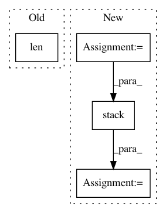

563acaf48cf475f4b125fd32374c6bb566049551,src/garage/torch/algos/vpg.py,VPG,process_samples,#VPG#Any#Any#,268
Before Change
tabular.record("AverageReturn", average_return)
tabular.record("Extras/EpisodeRewardMean",
np.mean(self._episode_reward_mean))
tabular.record("NumTrajs", len(paths))
tabular.record("StdReturn", np.std(undiscounted_returns))
tabular.record("MaxReturn", np.max(undiscounted_returns))
tabular.record("MinReturn", np.min(undiscounted_returns))
After Change
total_length=self.max_path_length,
axis=0) for path in paths
])
rewards = torch.stack([
loss_function_utils.pad_to_last(path["rewards"],
total_length=self.max_path_length)
for path in paths
])
return valids, obs, actions, rewards
def _log(self, itr, paths):
In pattern: SUPERPATTERN
Frequency: 3
Non-data size: 4
Instances
Project Name: rlworkgroup/garage
Commit Name: 563acaf48cf475f4b125fd32374c6bb566049551
Time: 2019-11-06
Author: 43084978+yonghyuc@users.noreply.github.com
File Name: src/garage/torch/algos/vpg.py
Class Name: VPG
Method Name: process_samples
Project Name: geomstats/geomstats
Commit Name: 109f18b6bce4b72299f6b9aa4cc94bab2d283190
Time: 2020-04-25
Author: nicolas.guigui@inria.fr
File Name: geomstats/geometry/beta_distributions.py
Class Name: BetaMetric
Method Name: christoffels
Project Name: khaotik/DaNet-Tensorflow
Commit Name: 98e43878ec0e56f4bacd2960169a483af8f44c31
Time: 2017-08-03
Author: junkkhaotik@gmail.com
File Name: app/ops.py
Class Name:
Method Name: pit_mse_loss